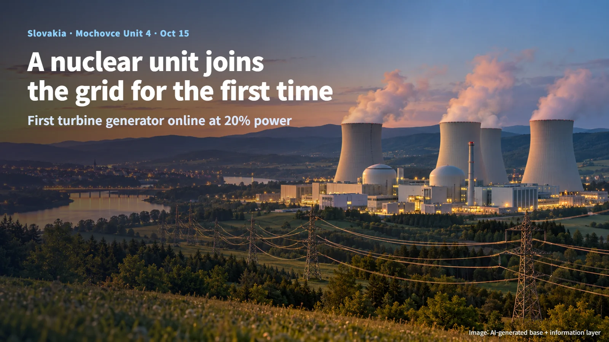
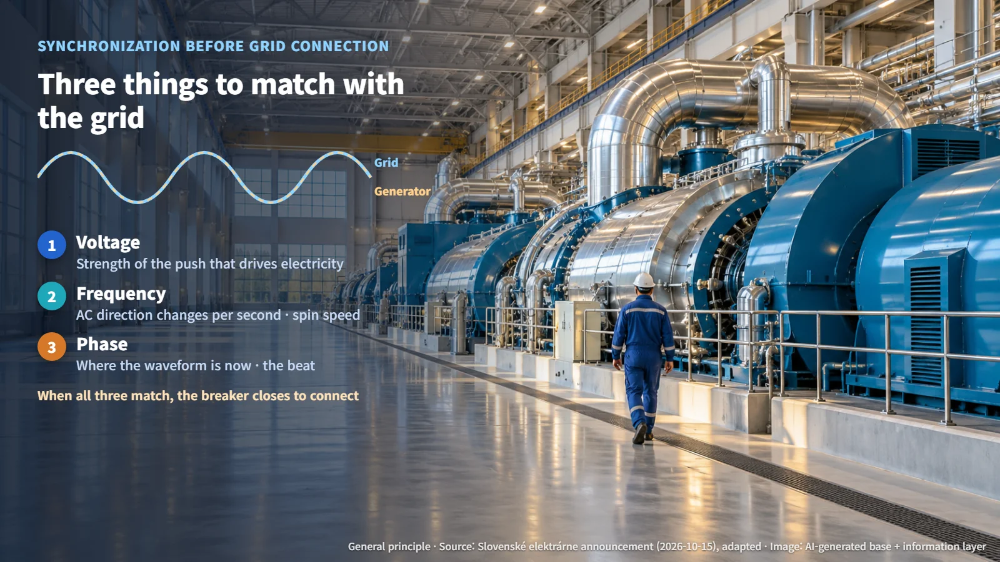
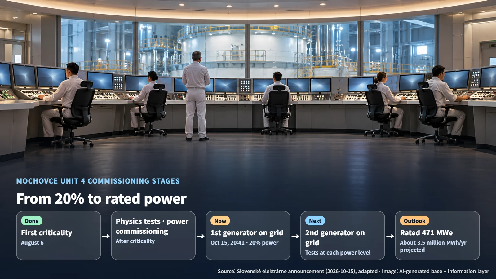

Slovakia · Commissioning
The Moment a Nuclear Plant First Joins the Grid: Mochovce Unit 4
Mochovce Unit 4 has delivered its first electricity to the Slovak grid; connection of the second turbine generator and step-by-step power ascension tests come next.
News about a new nuclear plant tends to arrive as a series of unfamiliar milestones: "first criticality," "grid connection," "commercial operation." Once you know which moment in a plant's life each term describes, even a one-line headline becomes much richer. On October 15, 2026, news came from Slovakia that Mochovce Unit 4 had delivered its first electricity. Let us follow that story to see what happens when a nuclear unit first connects to the power grid, and what comes after.

8:41 p.m. on October 15: The First Power
The operator, Slovenské elektrárne, announced that at 20:41 local time on October 15 it connected Mochovce Unit 4 to the Slovak power grid for the first time and began supplying electricity. The reactor was running at 20% power at that point, and the first of the unit's two turbine generators was synchronized with the grid.
The grid is the vast electrical network that ties together power plants, transmission lines, substations, homes and factories. Grid connection is the moment a new plant joins that network for the first time. Picture it this way: heat from the reactor turns water into steam, the steam spins a turbine, and the electricity it produces travels along transmission lines to people's homes for the very first time.
Unit 4 had already passed through several stages before this moment. It reached first criticality on August 6. Criticality is the state in which the nuclear fission chain reaction sustains itself at a steady level, much like a wood fire that burns evenly, neither dying out nor flaring up. The unit then went through physics tests (measurements of the nuclear characteristics of the reactor core) and power commissioning, and that work led to this first delivery of electricity.
Three Things to Match Before Connecting: Voltage, Frequency and Phase
Before a generator is connected to the grid, a set of readiness checks comes first. Ahead of the grid connection, the operator confirmed that the generator protection systems, the electrical circuits and the power output equipment that carries the generated electricity away were ready. It then carried out tests to match voltage, frequency and phase to grid conditions.
Here is what those three terms mean. Voltage is the strength of the push that drives electricity along. Frequency is the number of times alternating current changes direction each second, and it is tied directly to how fast the generator spins. Phase is where the electrical waveform sits at a given instant; think of it as the beat.
Imagine jumping into a group skipping rope. You can join smoothly only at the moment your body matches the speed and rhythm of the turning rope. A generator works the same way: the circuit breaker is closed to connect it at the moment its size, speed and beat all match the grid. This process is called synchronization, and it allows both the generator and the grid to exchange electricity stably.

From 20% to Rated Power: Power Ascension Testing
The first supply of electricity is a major milestone that leads into the next round of tests. The next step is grid connection of the second turbine generator, together with testing at successive power levels. These tests take place under the supervision of the regulator and check, step by step up to rated power (the maximum continuous output in the design), how the process, control and safety systems behave.
There is a good reason power is raised in stages, like climbing a staircase, rather than all at once. As power rises, the temperatures, pressures and flow rates in the reactor and steam systems change together, and the control equipment responds differently as well. At each step the team confirms from the data that the equipment is performing as designed before moving up to the next one, so operating experience builds up layer by layer.
The two-generator arrangement follows the same logic. The first machine is now connected; once the second one is connected too, the steam produced by the reactor will be turned into electricity in both generators. After rated power is reached, the operator's completion of commissioning and its announcement of commercial operation are the next milestones.

The Outlook at Rated Operation: 3.5 Million MWh a Year
Mochovce Unit 4 has a total installed capacity of 471 MWe. Two units are worth keeping in mind here. MWe (megawatts electric) is the amount of electrical output a plant can deliver at any one moment, like the number on a car's speedometer. MWh (megawatt-hours) is the amount of electricity actually produced over a period of time, which corresponds to the distance driven at that speed.
The operator expects that once Unit 4 reaches rated operation it will generate about 3.5 million MWh per year, equal to roughly 13% of Slovakia's current electricity consumption. This figure is a projection for full operation; actual generation will be determined by the results of the coming power ascension tests and by the unit's capacity factor.
The first electricity on the evening of October 15 is the scene in which all the preparation so far began turning into real power. As output starting at 20% climbs the staircase one step at a time toward rated power, it becomes easy to see how carefully each part is checked before a nuclear unit takes its place as a dependable member of the grid.